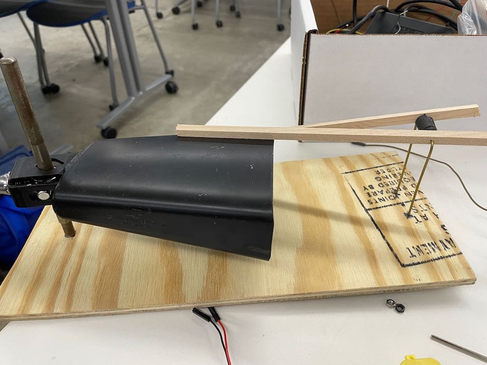

<br>
#### Week 3: Hand Tools and Fabrication
I am making a cowbell playing kinetic sculpture.
I screwed a metal rod onto a wooden platform. Next, I cut two wooden square rods to the same length using the band saw.

I then drilled a single hole in each of the wooden sticks so that I may thread a thin metal rod through them that would provide the fulcrum. I put some tape on the thin metal rod between the two wooden, square sticks so that they would remain the correct length apart.
In order to screw the motor onto the wooden platform, I drilled two holes onto a thin metal sheet and bent it so that the motor would reside between the cowbell and the fulcrum. Inspired by Leonardo da Vinci's Power hammer, I modelled two small cams using fusion 360.
One would have a horizontal hole for the motor arm, and the other, a vertical hole to fit over the motor arm.
<img src="../images/horizontal.jpeg" alt="horizontal" width="144" height="144">
<img src="../images/vertical.jpeg" alt="vertical" width="144" height="144">
Six equal-height feet were glued onto the bottom of the platform to provide space for the screws extruding fromt the bottom. I assume it will also help with the sound production.